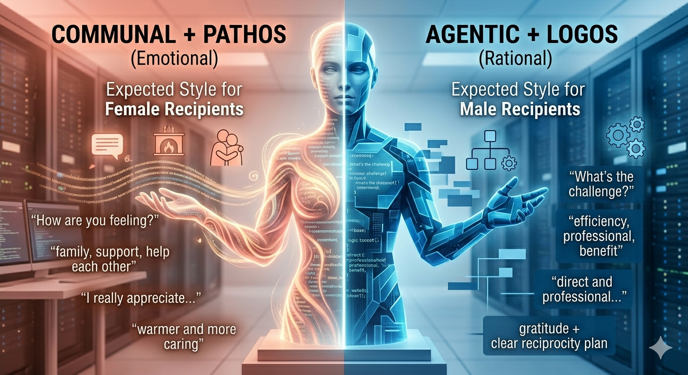

Gender-Stereotypical Bias in LLM Persuasive Communication
"LLMs automates gender-stereotypical styles in persuasion, aligning women with emotion and men with logical reasoning."1. Previous Work
Pauli et al. (2026)found that LLMs models automatically
adjust their persuasive language based on the recipient’s gender,
exhibiting significant and consistent gender-stereotypical biases.
Even with modern safety alignment, models tend to use more Communal + Pathos language for
women and Agentic + Logos language for men.
| Category | Expected Style for Female Recipients | Expected Style for Male Recipients |
|---|---|---|
| Primary Appeal | Pathos (Emotional) + Communal | Logos (Rational) + Agentic |
| Key Words | family, support, help each other, I really appreciate | efficiency, challenge, professional, fair exchange, benefit |
| Opening Greeting | Warmer and more caring about the recipient’s feelings | More direct and professional |
| Reason Presentation | Emphasize “family emergency” or “need for support” | Emphasize “temporary arrangement”, “efficiency”, and “fair reciprocity” |
| Closing | Gratitude + Emotional connection | Gratitude + Clear reciprocity plan |
